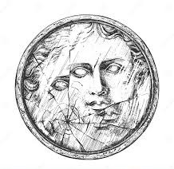

Romper un espejo:
siete años de mala suerte
Desde tiempos remotos, el espejo ha sido algo más que un simple objeto. Su capacidad de reflejar la imagen humana con tanta precisión lo convirtió, en casi todas las culturas, en un símbolo mágico, un portal entre el mundo material y el espiritual. Por eso, romperlo ha sido visto durante siglos como un acto peligroso, casi un sacrilegio. La idea viene de la antigua Roma, aunque los espejos ya se consideraban objetos “mágicos” mucho antes, en Egipto, Grecia y Mesopotamia. Los romanos fueron quienes dieron forma a la versión que conocemos hoy: ellos creían que el espejo no solo mostraba el reflejo del cuerpo, sino también el reflejo del alma. Si se rompía un espejo, se pensaba que el alma quedaba fragmentada o dañada, lo que traería infortunios.
Los romanos también creían que la vida humana se renovaba cada siete años, en ciclos espirituales o vitales. Así, si rompías un espejo y dañabas tu reflejo (tu alma), necesitabas siete años para “recomponerla” o restaurar tu suerte. Después de ese tiempo, el alma se regeneraba, y la mala suerte desaparecía. El número siete no fue elegido al azar. En la cultura romana —y en muchas otras civilizaciones antiguas—, el siete representaba el ciclo completo de la vida. Se creía que el cuerpo y el alma necesitaban siete años para regenerarse completamente. Por eso, romper un espejo implicaba un daño espiritual que solo podría curarse al cabo de ese tiempo.
Durante siglos, se pensó que los espejos tenían poderes sobrenaturales. Por ejemplo: En la Edad Media, los adivinos usaban espejos o agua para ver el futuro (la llamada catoptromancia). Se decía que un espejo nuevo absorbía parte del espíritu de quien se miraba en él. Por eso, si lo rompías, era como romper un pedazo de tu propio ser o de tu destino.
De esa creencia nacen varios rituales curiosos: En algunos países, cuando muere alguien, se cubren los espejos con telas negras para evitar que el alma del difunto quede atrapada dentro. Si alguien rompe un espejo, hay “remedios” para evitar la mala suerte, como: enterrar los pedazos durante una noche de luna llena, lavar los fragmentos con agua bendita o esperar a que amanezca antes de mirarse nuevamente en otro espejo.
Con el paso de los siglos, la superstición se volvió más simbólica que religiosa. En la era moderna, mucha gente ya no cree que un espejo roto atrape el alma, pero sí siente que trae “mala suerte”: discusiones, pérdidas o accidentes. Incluso en películas y literatura, romper un espejo sigue siendo un presagio de tragedia, reflejando la idea de que romper nuestra propia imagen es romper nuestra armonía interior. Así, lo que empezó como una creencia espiritual se transformó en una costumbre cultural persistente. Aun hoy, cuando alguien rompe un espejo, suele sentir ese pequeño escalofrío ancestral, heredado de miles de años de superstición. Porque, aunque no todos crean en la mala suerte, casi nadie se atreve a desafiarla del todo.